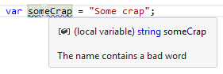

Analyze Code on the Fly
What you should know beforehand:
Examples (?):
Background code analysis is one of the most popular plugins tasks. The analysis is performed by daemons created using a special IDaemonStage interface. Nevertheless, the easiest way to perform code analysis is to employ the ElementProblemAnalyzer<T> class: it creates the corresponding daemon and daemon stage by itself.
The analysis could be divided into two steps:
- Actually, the analysis of code: performed by
ElementProblemAnalyzer<T>, whereTis the class of code elements you want to analyze. - Problematic code highlighting: performed by a class that implements the
IHighlightinginterface.
As an example, let’s create a code analyzer that checks all variable declarations on whether they contain the word “Crap” (in Create a Quick-Fix, we implement a quick-fix that suggests to replace the “Crap” occurrence with “BadWord”).

Problem Analyzer
[ElementProblemAnalyzer(typeof(IVariableDeclaration), HighlightingTypes =
new[] {typeof(BadWordNamingWarning)})]
public class BadWordNamingAnalyzer : ElementProblemAnalyzer<IVariableDeclaration>
{
protected override void Run(IVariableDeclaration element, ElementProblemAnalyzerData data,
IHighlightingConsumer consumer)
{
var nodeText = element.DeclaredName.ToLower();
if (!nodeText.Contains("crap"))
return;
consumer.AddHighlighting(new BadWordNamingWarning(element, element.NameIdentifier.GetDocumentRange()));
}
}
Notes
- Problem analyzer inherits from
ElementProblemAnalyzer<IVariableDeclaration>whereIVariableDeclarationis the type of the analyzed code element. - Problem analyzer must be marked with the
ElementProblemAnalyzerattribute:typeof(IVariableDeclaration)is the type of the analyzed code element.HighlightingTypesis the array of classes that should provide highlighting for the problem.
- The
Runmethod of the analyzer is executed when an element of theIVariableDeclarationis found. Here:elementis the found code element.ElementProblemAnalyzerDatadata is a context data provider that gives you access to some useful components like settings store.IHighlightingConsumerconsumer is used to communicate with the code highlighter.
consumer.AddHighlighting()highlights the problematic part of the code.
Highlighting
[StaticSeverityHighlighting(Severity.WARNING, HighlightingGroupIds.GutterMarksGroup)]
public class BadWordNamingWarning : IHighlighting
{
private readonly DocumentRange _documentRange;
public readonly IVariableDeclaration VariableDeclaration;
public BadWordNamingWarning(IVariableDeclaration variableDeclaration, DocumentRange documentRange)
{
VariableDeclaration = variableDeclaration;
_documentRange = documentRange;
}
public bool IsValid()
{
return VariableDeclaration.IsValid();
}
public DocumentRange CalculateRange()
{
return _documentRange;
}
public string ToolTip => "The name contains a bad word";
public string ErrorStripeToolTip { get; }
}
Notes
- The class responsible for code highlighting must implement the
IHighlightinginterface. - The class must be also marked with either the
ConfigurableSeverityHighlightingattribute (used for complex cases, e.g. when you need to temporarily disable highlighting depending on some conditions) orStaticSeverityHighlighting(is always shown):Severity.WARNING: the severity of the highlighting. Could be info, warning, error, etc.HighlightingGroupIds.GutterMarksGroup: highlighting group. It could be e.g. a compiler warning, best practice, code style issue, etc.
IsValidchecks whether the highlighting is applicable.CalculateRangereturns the range of the highlighting in the document.- The
ToolTipproperty is responsible for the tooltip that is shown when the mouse is hold over the highlighted element.
Last modified: 12 July 2017